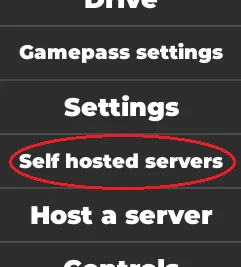
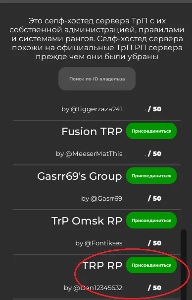

В главном меню игры найдите кнопку «Селф-хостед сервера» (см. скриншот №1). Затем в списке доступных серверов найдите сервер под названием TRP RP, автором которого указан @Dan12345632 (см. скриншот №2), и нажмите кнопку «Присоединиться».


Обратите внимание:из-за особенностей платформы Roblox сервер автоматически отключается, когда все участники выходят из него. По этой причине сервер не работает круглосуточно. Начиная с 9 марта 2024 года, хосты обеспечивают его работу в дневное время. О статусе сервера можно узнать на главной странице сайта — если кнопка «Сервер Roblox» горит зелёным, сервер активен. Также актуальная информация публикуется в Telegramи Discord. Расписание работы сервера вы можете найти во вкладке «События и смены».
Существует два способа подготовки к сдаче экзаменов на водительские категории 3 и 2 класса.
Первый вариант — очное обучение.
Его цель — комплексно подготовить вас к экзамену на любую категорию. В рамках очного обучения вам будут проводить лекции и практические занятия. Продолжительность курса не фиксирована и зависит от того, как быстро группа будет собираться на занятия.
Второй вариант — заочное обучение.
В этом случае вы самостоятельно изучаете необходимые материалы, такие как руководство по маршрутам и табличному оформлению, схемы депо и маршрутов, устав, регламент радиообмена и взаимодействия сотрудников троллейбусного управления с диспетчерской службой, а также инструкцию по работе водителей и сотрудников транспортного отдела. Мы настоятельно рекомендуем пройти практическую подготовку, чтобы успешно сдать экзамен. Обратите внимание: при заочном обучении вы можете сдавать экзамены только по порядку — сначала на водителя троллейбуса 3 класса, затем 2 класса, и только после этого — на водителя троллейбуса 1 класса.
Чтобы записаться на очное обучение, откройте тикет. Если вы проходите заочное обучение, вы можете подать заявку на приватный экзамен или дождаться объявления об открытом экзамене.
Попасть на эту должность можно двумя способами: либо сразу после успешной сдачи экзамена при очном обучении, либо через систему приватных экзаменов в рамках заочного обучения.
В случае заочного формата вам необходимо идеально выучить весь теоретический материал, так как на экзамене допускается не более двух ошибок. Также вы должны уверенно уметь запускать троллейбус и знать все основные процедуры и уметь ездить по расписанию. Перед практической частью необходимо сдать теоретический экзамен и дождаться положительного результата.
После этого вы можете подать заявление на приватный экзамен или явиться на ближайший открытый экзамен на эту должность.
По этой классификации вы можете регистрироваться на РП-сессии и привязываться к соответствующим транспортным средствам.
Внимание!Получение класса водителя не даёт автоматического права на управление соответствующим транспортом — для этого необходимы определённые водительские права. Чтобы получить права, нужно либо сдавать экзамен сразу на нужный класс на нужном троллейбусе, либо, если у вас уже есть класс, дополнительно сдавать экзамен на права для нужного троллейбуса. Исключение составляет ЗиУ-682 (ЗиУ-9) Техническая помощь — для управления этим транспортом всегда требуется отдельный экзамен после прохождения на первый класс.
Диспетчер конечной станции (ДКС) — это дежурный на конечной остановке, который проверяет троллейбус на наличие нарушений, соблюдение расписания и возможные неисправности. При получении допуска к ДКС вы также получаете доступ к должности ДТД — диспетчера троллейбусного депо, который отвечает за выпуск троллейбусов с депо на маршрут.
Чтобы получить эти должности, необходимо знать обязанности и инструкции как для ДКС, так и для ДТД, а также выучить устав, регламент радиообмена и взаимодействия сотрудников с диспетчерской службой, руководство по маршрутам и табличному оформлению. В качестве дополнительной рекомендации — ознакомиться со схемой депо и маршрутной сети.
Перед сдачей экзамена настоятельно рекомендуем потренироваться в поиске нарушений и неисправностей различной сложности в троллейбусах. После подготовки вы можете заполнить заявление на получение допуска к ДКС.
Вероятно, вы имеете в виду Диспетчера Троллейбусного Управления (ДТУ). При успешной сдаче на ДТУ вы также получаете права на выполнение обязанностей Диспетчера Троллейбусного Депо (ДТД).
Чтобы претендовать на данную должность, необходимо изучить инструкцию по организации и координации работы диспетчеров троллейбусного управления и депо, устав, схемы троллейбусных парков и маршрутов, регламент радиообмена и взаимодействия с диспетчерской службой, а также руководство по маршрутам и табличному оформлению.
После подготовки подайте заявление на ДТУ. Вам будет назначена мини-смена в тестовом формате и проведено собеседование. По результатам при положительном исходе вы проходите испытательный срок, по завершении которого становитесь полноценным ДТУ и ДТД.
В зависимости от ваших навыков и интересов вы можете выбрать один из четырёх отделов:
Учебный Центр (УбЦ)— отдел, отвечающий за обучение, проведение экзаменов и переаттестаций сотрудников.
Должности:
Необходимые материалы:
Отдел Безопасности Движения (ОБД)— отдел, занимающийся контролем движения транспортных средств по дорогам, а также троллейбусов по маршрутам и разбором ДТП и иных происшествий.
Должности:
Необходимые материалы:
Финансово-Аналитический Отдел (ФАО)— отдел, отвечающий за операции по финансовой системе. Является «бухгалтерией проекта».
Должности:
Необходимые материалы:
Кадровый Отдел по Управлению Персоналом (КОУП)— отдел, занимающийся приёмом и увольнением сотрудников, контролем состава, а также обработкой заявок.
Должности:
Необходимые материалы:
Нажав на название интересующего отдела, вы сможете перейти к форме для подачи заявления. Перед принятием в любой из отделов проводится собеседование и назначается испытательный срок.
Да, норма работы существует, поскольку мы являемся RP-проектом, и каждая должность имеет установленное минимальное количество смен или объёма работы, которое необходимо выполнить. Невыполнение этой нормы может привести к увольнению без возможности восстановления в соответствии с Уставом.
Нормы различаются в зависимости от отдела, времени года, праздничных периодов и других факторов. В случае переработки нормы предусмотрены поощрения. Перед подачей заявления рекомендуется заранее уточнить текущую норму через тикет.
Водителям переживать не стоит — для них установленная норма крайне низкая и легко выполнима.
Да, конечно. Если у вас есть действующие водительские права на управление троллейбусом, вы можете выходить на смены в качестве водителя даже находясь в составе персонала.
Главное — не забывайте соблюдать норму, установленную для вашего основного отдела, и своевременно выполнять свои должностные обязанности.
Если вы были уволены до августа 2023 года, восстановление невозможно. Также вы не сможете восстановиться, если увольнение произошло по ЧС, без права на восстановление или не по собственному желанию.
В этих ситуациях вам необходимо будет заново проходить экзамен. Если же вы не подпадаете под указанные исключения, восстановление на должность возможно.
В случае, если ваша прежняя должность была упразднена, вам будет предложена эквивалентная по функционалу.
Нет, на данный момент опыт, полученный на других серверах или проектах, не даёт возможности сразу занять должность у нас. У нас отсутствует система эквивалентных должностей, поэтому трудоустройство возможно только после успешной сдачи экзамена.
Однако ваш прежний опыт может оказаться полезным при подготовке и прохождении экзаменационного этапа.
Да, такие должности действительно существуют. Они не участвуют напрямую в RP-процессе, но играют важную роль в обеспечении работы проекта.
Подробнее о них вы сможете узнать на специально отведённой для этого странице, где описаны функции, требования и порядок трудоустройства на каждую из этих должностей. У таких должностей также предусмотрена норма, однако она не строгая и вполне выполнимая.
Все перечисленные ссылки ведут на официальные ресурсы проекта "TRP RP – RolePlay Project". Любые другие страницы, отличающиеся по названию или ссылке, не имеют отношения к проекту. Будьте внимательны и проверяйте подлинность источников.
Проект "TRP RP" не является юридическим лицом и не предоставляет никаких услуг!
Контакты проекта "TRP RP"